The horror genre is so prevalent within cinema that the term "horror movie" hardly needs a definition. They're movies that are scary. They aim to unnerve viewers. But within the horror genre are various subgenres, and each tends to have unique ways in which they attempt to scare, frighten, and unsettle audiences who feel brave enough to sit in the dark and watch them for two hours (on average).
Gothic horror is one of the most significant of these horror subgenres, and indeed has its roots in literature that existed long before film was invented. Gothic horror tends to be rich with metaphors, complex villains, and landscapes that are more often than not shrouded in darkness and fog. Gothic horror can deal with the supernatural, but not exclusively; sometimes, man can be the real monster, after all. Gothic horror succeeds in being subtly creepy and unsettling, with the following titles exemplifying the subgenre well within the medium of cinema.
Interview with the vampire (1994)
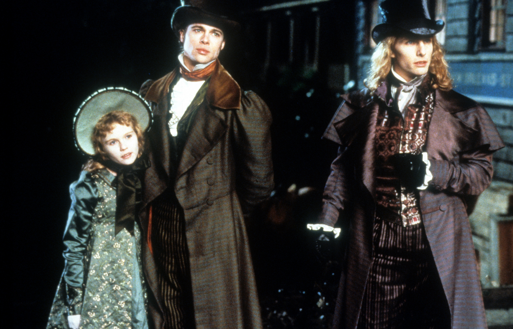Based on the acclaimed 1976 novel of the same name by Anne Rice, Interview with the Vampire is one of many notable movies released in 1994. It's intriguing based on the strength of its cast alone, given the two leads here are played by superstars Brad Pitt and Tom Cruise, with a strong supporting cast including the likes of Antonio Banderas, Kirsten Dunst, and Christian Slater.
As the title suggests, a vampire gives a detailed look back at his life through an interview, which serves as a framing device and allows the film to have a rather epic scope and cover many years. It deals with undead characters grappling with the sorts of things regular humans do, making it work as both a gothic horror/fantasy film and a solidly compelling drama.
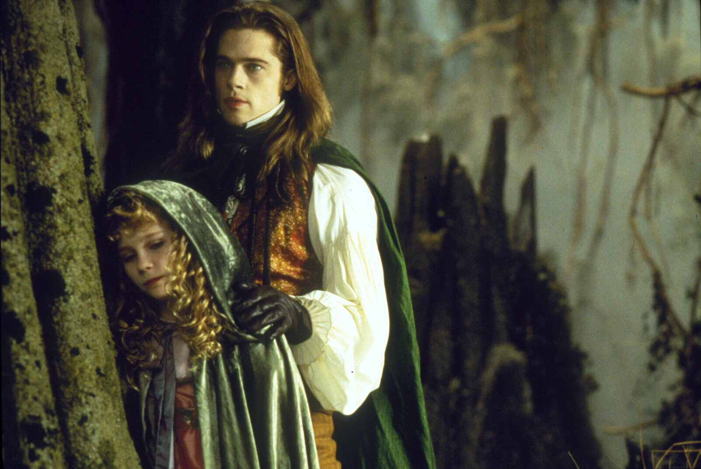Although one of the characters in "Interview with the Vampire" begs to be transformed into a vampire, and eagerly awaits the doom of immortality, the movie never makes vampirism look like anything but an endless sadness. That is its greatest strength.
Although much has been said about the film's level of violence (and although the R rating is quite correct), those who have seen other horror films will not be particularly shocked. My complaint about the film is that not very much happens, in the plot sense. The movie is more about the history and reality of vampirism than about specific events, although some action does center around the fate(s) of Lestat. A stronger plot engine might have drawn us more quickly to the end, but on a scene by scene basis, "Interview with the Vampire" is a skillful exercise in macabre imagination.
Bram Stoker’s Dracula (1992)
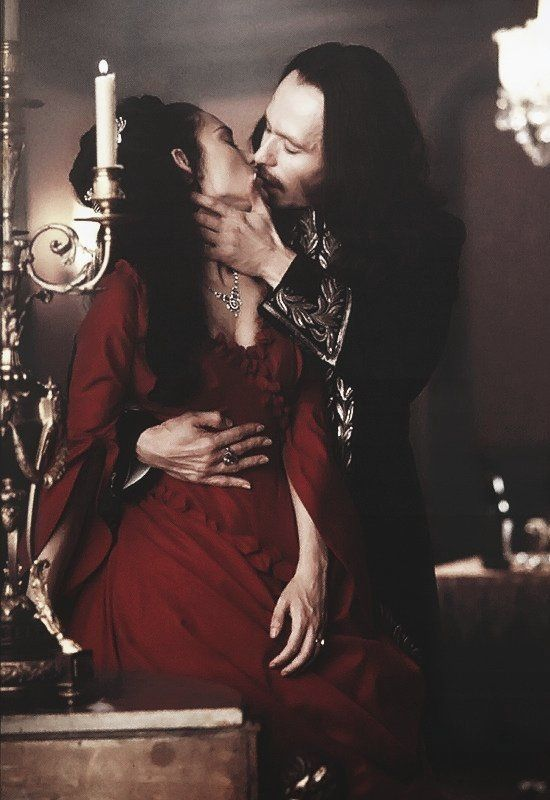People who know Francis Ford Coppola mostly from movies like Apocalypse Now and those in The Godfather trilogy might be surprised to learn he made a remarkably good Dracula movie, too. 1992's Bram Stoker's Dracula is certainly a good deal racier and gorier than most adaptations in the past, like those popular in the 1930s and the Hammer Horror ones from the 1950s onwards.
Its inclusion of the author's name in its title promises a more faithful adaptation than had been seen previously, and in that regard, Bram Stoker's Dracula certainly delivers. It's positively dripping with style, atmosphere, and copious amounts of blood, and also has a cast to die for, given the actors starring here include the likes of Gary Oldman, Winona Ryder, Keanu Reeves, and Anthony Hopkins.
Sweeney Todd: The Demon Barber of Fleet Street (2007)
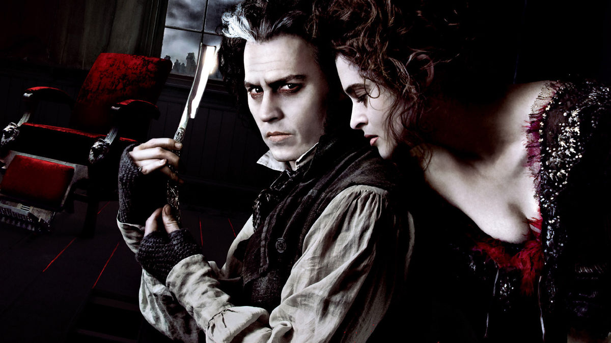Anyone who thinks a gothic horror musical about a serial killer sounds intriguing ought to check out Sweeney Todd: The Demon Barber of Fleet Street. It adapts the well-known Stephen Sondheim stage musical to the big screen extremely well, and might well be Tim Burton's best gothic horror movie (plenty of other films of his have a gothic feel, or gothic visuals, but might not be definable as full-on horror movies).
Repo! The Genetic Opera (2008)
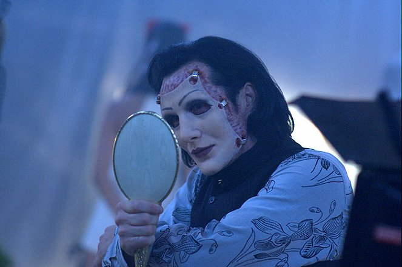Repo! opens with a comic-book-style prologue that establishes a world where organ replacement is the new health norm. But organs are expensive, so payment plans have to be signed. And if you fall behind, the organ is up for repossession through any means possible. Well before Mike Flanagan delivered a dark Big Pharma story in The Fall of the House of Usher, Repo did the same with the Largo family.
Patriarch Rotti Largo (Paul Sorvino) is trying to divide his empire among his children: Luigi (Bill Moseley), Pavi (Nivek Ogre), and Amber Sweet (Paris Hilton, who “won” a Razzie for her performance). Meanwhile, the sickly young Shilo Wallace (Spy Kids’ Alexa PenaVega) goes on an adventure to discover the secrets of her past, defying the will of her scientist father, Nathan (Anthony Stewart Head).
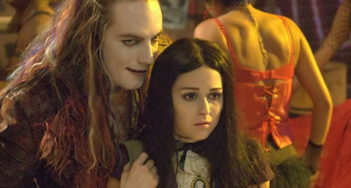Repo is a sung-through musical, meaning every single line of dialogue is sung, like in Les Miserables. It adds an otherworldliness to the story, allowing your suspension of disbelief to go that much further. When every word is sung, you’re willing to buy into a world where an overdue heart could be pulled from your chest.
While the opera elements take the spotlight, this movie is full of rock and roll, from Shilo’s black mesh sleeves to a surprise Joan Jett cameo. It’s not just for theater kids who have a closet full of Rocky Horror costumes; it’s a sicko classic that should stand next to The Craft and Corpse Bride in the gothic movie canon. The entire movie is filmed with a 2000s’ out-of-focus haziness that makes it all feel like a dreamy music video, and the fashions are straight out of Hot Topic, but that doesn’t make Repo! any less fun.
Corpse Bride (2005)
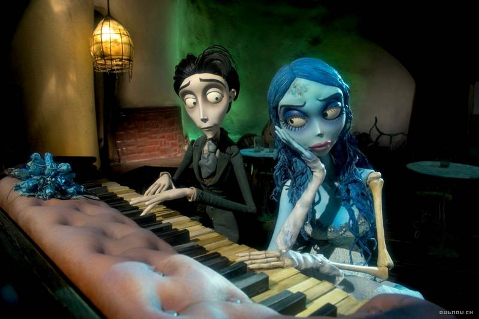Corpse Bride was dug out of the grave and released to theaters in 2005. This gothic fairytale follows a young groom-to-be, Victor, as he accidentally weds a deceased bride, Emily, and finds himself trapped between the Land of the Living and the Land of the Dead, leading to a series of misadventures and unexpected discoveries.
Corpse Bride is a hauntingly beautiful stop-motion animation by Tim Burton. It’s hard to believe that it’s been almost twenty years since its release. This film’s signature gothic aesthetic comes to life in every frame. In my most recent watch, Corpse Bride falls short in terms of character development.
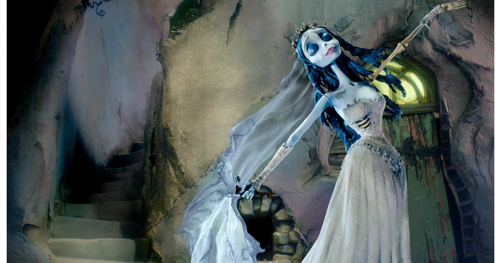Corpse Bride stands as a testament to Tim Burton's visionary approach to storytelling and his ability to create visually captivating worlds that resonate with audiences of all ages. For a kid's movie, Corpse Bride is very dark. Death is a prominent theme. The Land of the Dead is filled to the casket with dark imagery. The film could potentially scare young audiences.
Not many animated horror films like Corpse Bride exist. The film's blend of dark humor, romance, and fantastical elements, combined with its exquisite visual artistry and evocative musical score, solidifies its place as a beloved classic in the realm of animated cinema.
Nosferatu (1922)
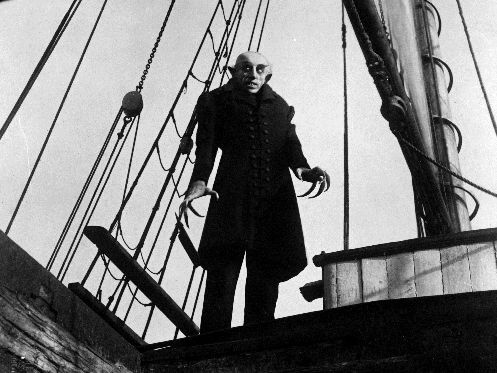More than half a century before Werner Herzog tried his hand at making a Nosferatu movie, the original one came out and became one of the most significant films of the silent era. It was the first version of Nosferatu, though of course was itself an unofficial adaptation/reinterpretation of Dracula.
Still, it's done in a way where it's a good deal creepier and more successfully horrifying than the (official) Dracula movies that came out in its wake. It might have something to do with the lack of dialogue; the visuals just feel more impactful and less of this world, which naturally bumps up the horror element when the movie in question revolves around a menacing and dangerous Count who's also a vampire.
The Phantom of the Opera (1962)
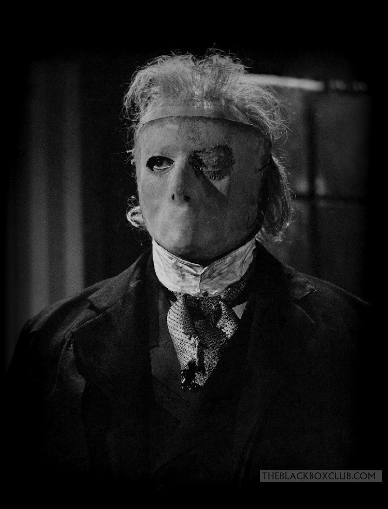This was the third film version made of Gaston Leroux’s The Phantom of the Opera (1909). The first and finest version had been the silent Universal version The Phantom of the Opera (1925) with Lon Chaney [Sr]. The 1925 version has a glorious Gothic feel to it that none of the other adaptations ever achieve. Universal had previously remade the film in sound and colour as Phantom of the Opera (1943) with Claude Rains, although this version lacked the greatness of its predecessor. This third version of the story came from England’s Hammer Films. (See bottom of the page for the other versions of The Phantom of the Opera).
As for the Phantom's look, it's fine: his wardrobe is acceptable, though I wish he wore his cape more, and I actually like the mask quite a bit. I've read it was literally thrown together at the last minute and I think that gave it a kind of gritty, grimy look, as if this was something he just found lying around and has been wearing for many years.
Sleepy Hollow (1999)
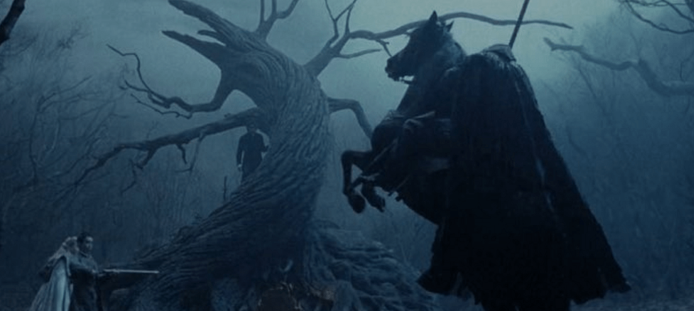Sleepy Hollow is based on a short story called The Legend of Sleepy Hollow, which was written in 1820, emphasizing how far back in history the gothic horror subgenre's roots go. It's set in the town of Sleepy Hollow, and follows Ichabod Crane (Johnny Depp) as he investigates a series of gruesome murders there.
The killings are thought to have been committed by the Headless Horseman, who's a figure from folklore that goes back even earlier than 1820; perhaps even to the Middle Ages. In this 1999 adaptation, director Tim Burton rides a fine line between keeping things eerily old-fashioned yet a little more modern/fresh in other places, thanks to the extravagant style and greatly exaggerated violent content.
Bride of Frankenstein (1935)
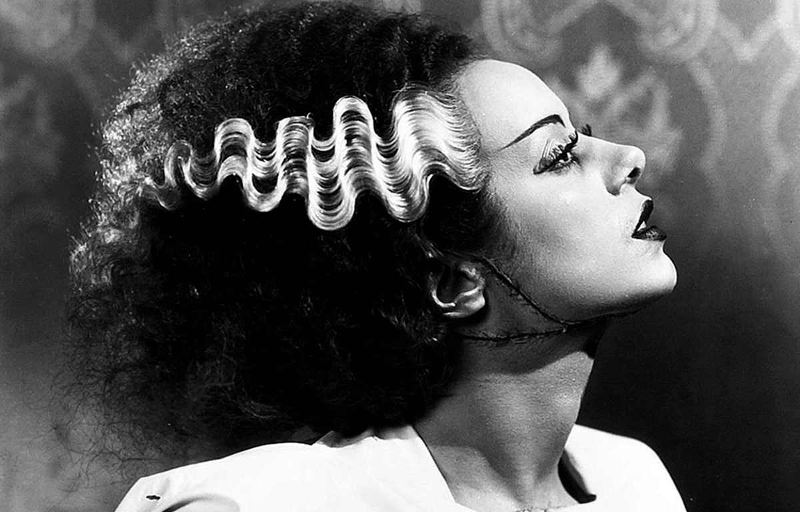No disrespect toward 1931's Frankenstein, but 1935's The Bride of Frankenstein is quite possibly the rare sequel that manages to be notably better than its predecessor. It reveals the monster survived the events of the first film, and is determined to find his creator and demand that Dr. Frankenstein makes him a female companion.
The famed second monster doesn't appear in the film for very long, but she certainly makes an impact and is debatably just as iconic as the regular old Frankenstein's monster. The Bride of Frankenstein builds on the first film well, and gets the balance between the familiar and the fresh just right, all around making for a great horror film.
Crimson Peak (2015)
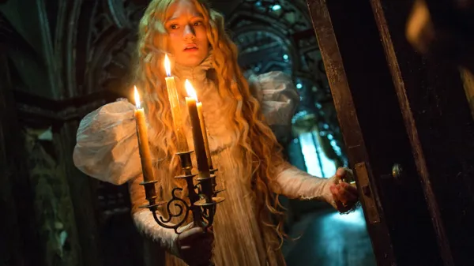Guillermo del Toro is a filmmaker who tends to have unsettling and disturbing elements in his movies, even when those movies don't specifically belong to the horror genre. As such, when he embraces horror wholeheartedly - as he did for 2015's Crimson Peak - the results are spectacularly spooky.
Crimson Peak's a movie that clearly demonstrates del Toro's love for this subgenre, with it being distinctly old-fashioned narratively and aesthetically, with amazing sets and a story about an unusual family and various people with tragic pasts clashing. It's not the kind of horror movie that will terrify or traumatize, but it's eerie in a kind of (oddly) fun way, and one of the best gothic horror throwbacks in recent memory.
Van Helsing (2004)
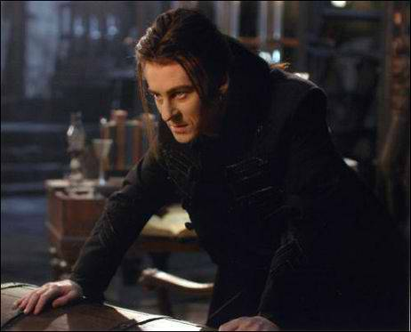Van Helsing is all of the steam punk heroics and CGI action you can jab into your jaded eye sockets. Crammed with more villains than a gelatinous embryonic sack writhing with vampire progeny, Van Helsing gives us the ADHD versions of all of my favourite creatures: the Wolf Man, Count Dracula and Frankenstein’s monster.
Van Helsing is the Universal Horror mashup for the youtube generation. Here’s the recipe: take all of the legendary Universal Monsters, blend them into a chunky batter and then press them into eco-green, mega power Nutraloaf energy bars for maximum awesomenicity.
The crossover nature of the project was rather ambitious, but it doesn’t take full advantage of the two novels it chooses to adapt. The Gothic is all about excess and intensity, and those are two traits that this movie sorely lacks. Though, credit where credit is due, the film’s interpretation of Frankenstein’s monster is much closer to how he is in Shelley’s novel compared to most other pop culture adaptations of the Gothic classic.
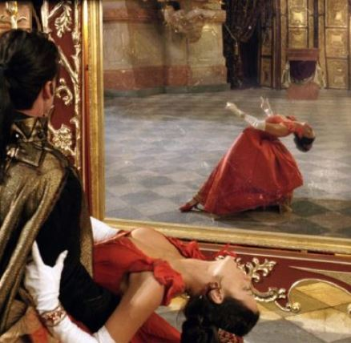The film is also sly, and often very funny. Perhaps that's what threw so many viewers. They weren't expecting a comedy. There are plenty of clues, right from the start. In the thrilling, operatic, opening sequence, lovingly-shot in black and white, you have Samuel West (as Victor Frankenstein) paying tribute to Colin Clive's delirious Henry Frankenstein, while Richard Roxburgh chews the scenery as his paymaster, Dracula (it's pronounced Drag-oo-lee-ahh, according to the man with the fangs), in a performance that wouldn't have seemed out of place in Mel Brooks' Young Frankenstein. If that didn't clue you in that you were watching something with its tongue decidedly in cheek, I don't know what would! There's no denying that the film has many weaknesses: the script is little more than a string of set-piece action sequences; there's virtually no character development; the dialogue is cheesy; and the performances can charitably be described as dubious. Did the film deserve to flounder so spectacularly? In truth it's not done too badly. It cost about $160m, and took about $120m in the US alone. Add another $25m or so from the UK box office, and it doesn't look so disastrous.
The Picture of Dorian Gray (1945)
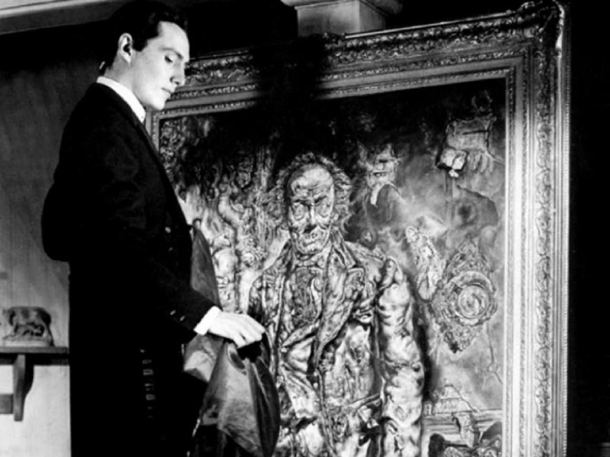In 1890, Oscar Wilde penned The Picture of Dorian Gray, which centered on a man who was able to stay youthful while his likeness in a portrait aged in his place. 55 years later, it got a film adaptation that holds up surprisingly well, and is an example of a decades-old horror movie that still manages to feel eerie to this day.
Just like all gothic horror should, The Picture of Dorian Gray has a tremendous amount of atmosphere, and is also notable for having some brief shots in the film memorably appear in color, while the rest of it's shot in black and white. It takes the original story and does it justice in a new medium, and is itself something of a classic.
Nosferatu the Vampyre (1979)
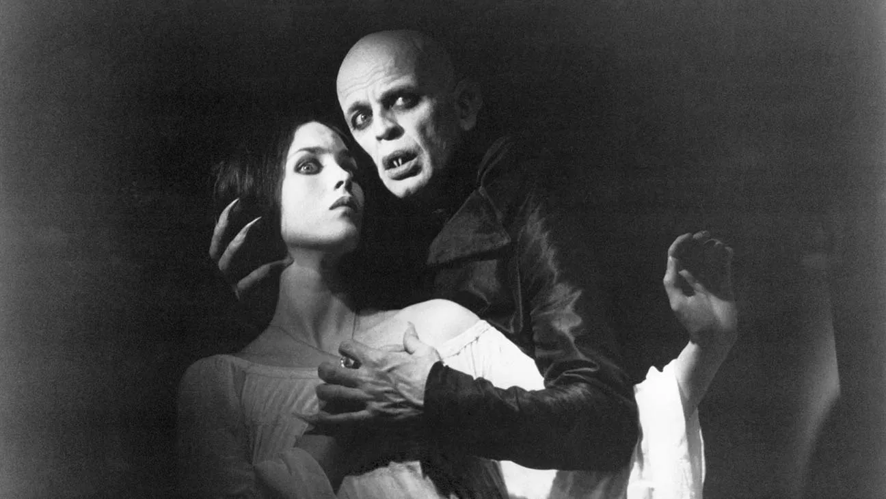When Werner Herzog's not making unique and captivating documentaries, it turns out he's also capable of making fantastic works of fiction. His 1979 film, Nosferatu the Vampyre, is an update/remake of an unofficial adaptation of Bram Stoker's Dracula, but labeling it as a mere remake would feel unfair, given how much Herzog brings to a premise that's, on paper, familiar.
Frequent Herzog collaborator Klaus Kinski plays the vampire at the center of Nosferatu the Vampyre, and its pitch-perfect casting, with it being one of the distinctive actor's best overall performances. Isabelle Adjani and Bruno Ganz are also very good, and the film's oppressive atmosphere, haunting visuals, and eerie uses of classical music also manage to leave quite the impression.
Eyes Without a Face (1960)
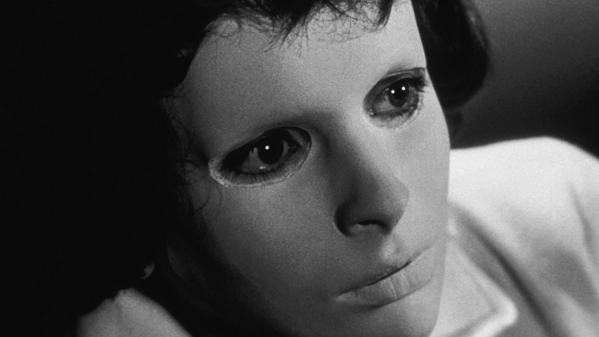Some squeamish viewers may feel safe going into a horror movie made as far back as 1960, because what was shocking back then doesn't tend to shock as much nowadays. Yet to such a squeamish viewer's surprise (or alarm), Eyes Without a Face - made in 1960 - is still able to shock with its violence and horror content all these years later.
The plot is about a doctor pushing medical science to its limits in his attempts to perform a face transplant for his daughter, who was disfigured as a result of an accident he caused. Once he starts really taking things too far, Eyes Without a Face becomes equal parts tense and shocking, making this one of the best horror films - gothic-infused or otherwise - of its decade.
Rosemary's Baby (1968)
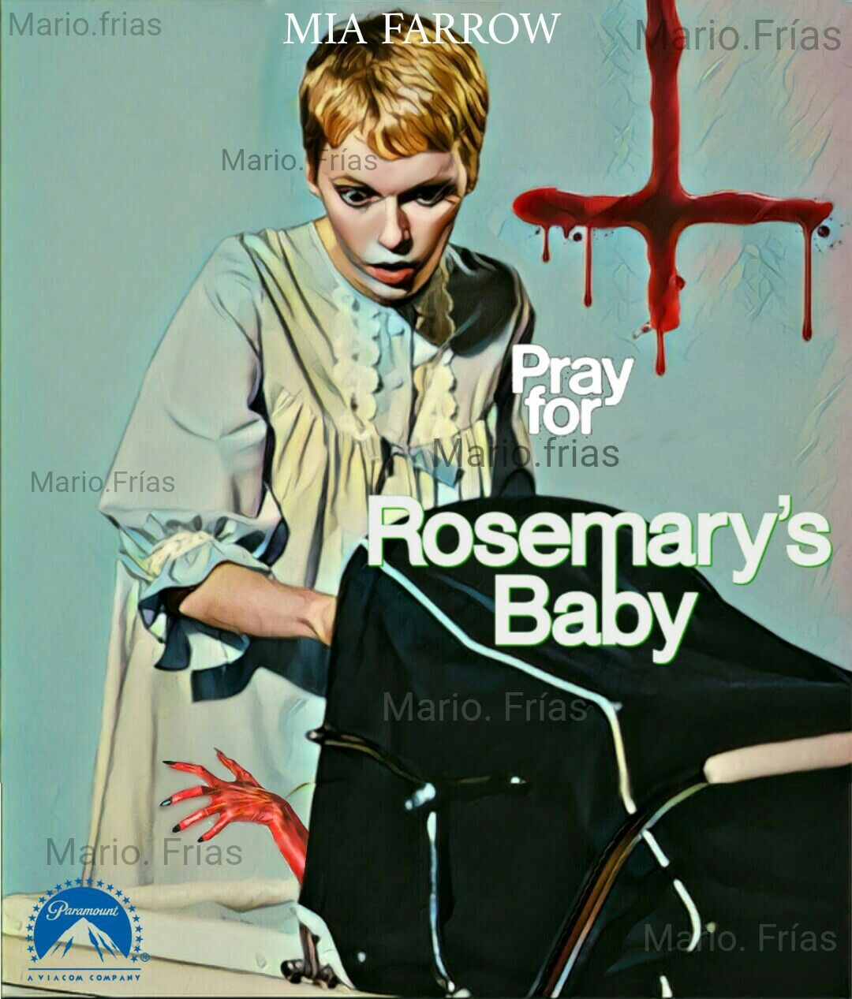The 1968's offbeat cult film directed by disgraced director Roman Polanski was ranked by Forbes as the second best classic horror of all time, right after Hitchcock's Psycho. Mia Farrow stars as Rosemary Woodhouse, a young mother who is forced to give birth to the son of the devil - after being abused, drugged and tortured by a Satanic cult, who will eventually try to steal her baby.
Mia Farrow impressively illustrates the emotional distress and complexity as she is manipulated and abused by her husband Guy - played by John Cassavetes - and the rest of the cult, while being pregnant. The actress perfectly brings to life the character of an isolated woman under constant siege - which is what makes the horror movie dreadfully real
The Brides of Dracula (1960)
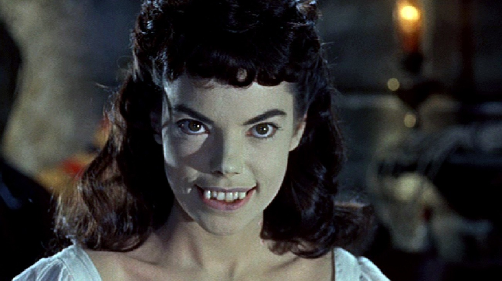A sumptuous cautionary tale, Brides of Dracula seduces then shocks, revealing the rancid dysfunction festering beneath the surface of Gothic romanticism. As the title suggests, the film largely focuses on women, in particular the grave consequences of socially-sanctioned female fantasies. An integral mother-son relationship also gives the plot a Freudian depth of depravity and enhances its subtle critique of women enabling irredeemable, monstrous men.

Instead of simply resurrecting Dracula, this enclosed entry in the Hammer canon creates a daringly different kind of vampire, a disciple of the Count with his own shadowy backstory. As incarnated by David Peel, Baron Meinster is a spoiled, manipulative, sexually ambiguous rakehell who recognizes and ruthlessly exploits the images that women project onto him. He’s the Prince of Darkness in Prince Charming’s clothing.
The Brides script went through a long and complicated development, yet it manages to clip along at an exciting pace, evoke a sense of familial tragedy, and include several memorably unsettling scenes of the dead rising and attacking. No small feat!
The Devil Rides Out (1968)
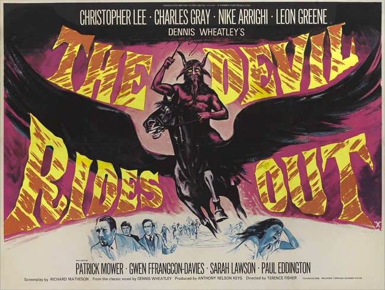A classic, vintage horror, another classic from Hammer Horror. Expect the usual Hammer attributes, terror, shock, scares, and a lot of mesmerism. It doesn't stint on the terror factor here, even now it packs a punch, with some sinister concepts.
Is "The Devil Rides Out" the best Hammer film this notorious production company ever brought forward?? Quite possibly so, as it is an almost perfect mixture of allegorical melodrama, compelling thriller and occult horror. The screenplay, adapted from a novel by horror cinema's most talented writer Richard Matheson, is loaded with suspense and atmospheric eeriness and contains an extended occult vocabulary that'll make genre fans foam!
Stonehearst Asylum/Eliza Graves (2014)
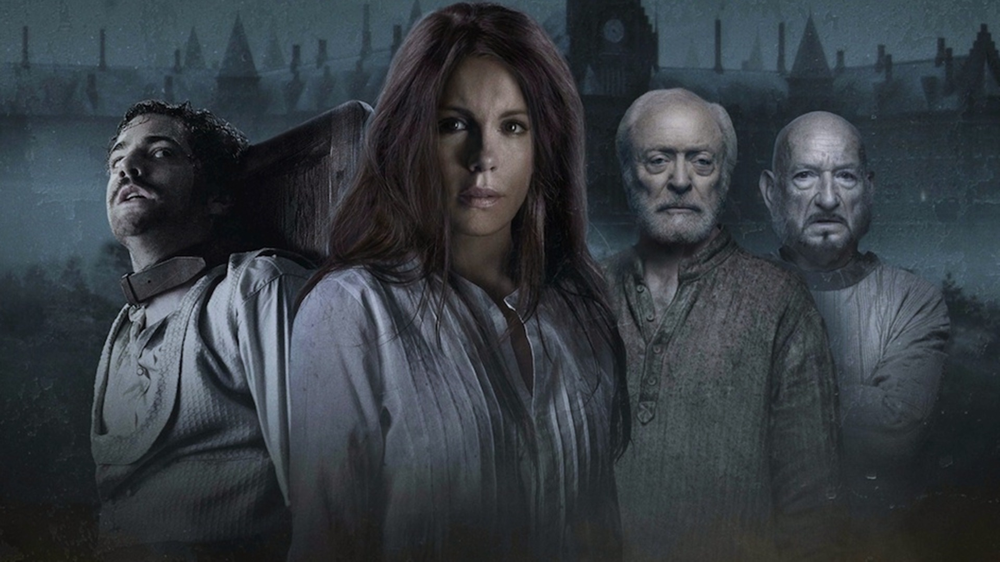If you like period pieces, psychopathic characters, excellent actors, and plenty of atmospherics, then "Stonehearst Asylum" should be right up your alley. Between its distinctly modern intelligence and razor-sharp plotting, Director, Brad Anderson's clever contraption almost matches the heights of Gothic grandeur that keep Poe held in high esteem even today.
Jim Sturges plays Edward Newgate, a young psychiatrist who is just starting out on his career. He arrives at the isolated Stonehearst Asylum, run by the mysterious Dr Silas Lamb. Lamb unorthodox practises sit uneasy with Newgate and he soon realises that there’s more to the asylum’s history than Lamb is telling him. He befriends Eliza Graves (Kate Beckinsale), a mysterious patient with a painful past, who tells Newgate the asylums’s dangerous secret. To say more would give away the film’s myriad of plot twists and turns.
Anderson clearly takes delight in all the proceedings, which is one of the reasons the film feels fresh. While the film might lack some the macabre drama and dark humor of the original Edgar Allan Poe tale, it still does a fine job of conveying a creepy, engaging thriller with a brilliant Gothic atmosphere and fine performances from its terrific ensemble cast.
The Hunger (1983)

In a bizarre, gory vampire drama starring David Bowie, Susan Sanderson, and Catherine Deneuve, John (David Bowie), who is battling with the realization that he is not as immortal as he imagined, brings Sarah (Susan Sanderson), a gerontologist, home to slow down his rapid aging.
John is put inside a coffin to lay there eternally and gradually dies as the gerontologist transforms into a vampire by his partner, Miriam (Catherine Deneuve), and must deal with the fallout. Miriam and Sarah start dating physically, revealing a blatant power disparity.
Based on the novel by Whitley Strieber (also wrote Wolfen and Communion), Scott presents us with a story about vampires, although not the typical genre picture we might expect. In this film we look at vampirism in a more practical, reality-based way; maybe not at every moment, but certainly it’s a large and prominent theme. Strieber’s main ideas stay in tact, while some is changed to fit the mould of what Scott was hoping to accomplish. Mainly, the idea of eternal life and eternal youth as two distinctly different things is a large part of the screenplay, which also plays into vampirism, in this form, as a quest for vanity.